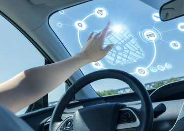

Augmented Reality
Met de kracht van Cloud gebaseerde platforms, inclusief big data-analyse, zal deze lijst zeker exponentieel groeien. Wat ook al verbeterd wordt is het presenteren van de geanalyseerde data, immers, de AI moet de suggesties doen op een gebruiksvriendelijke manier die niet afleidt van het auto besturen. Hiervoor wordt Augmented Reality gebruikt, onder meer door de Amerikaanse fabrikant Harman, waarbij allerlei informatie op de voorruit gepresenteerd wordt. Het kan hier gaan om routeplanning, wegcondities of kritieke technische informatie zoals benzinepeil, motortemperatuur of bandenspanning. Ook wordt er gedacht aan een toepassing om de toestand van andere weggebruikers te tonen, waarmee je begrip kunt tonen voor onbehoorlijk weggedrag (stel je een overlay met een infobalk voor: “Met ziek kind naar de dokter!!” bij een auto die erg gehaast is en asociaal rijdt). Begin 2018 wordt deze technologie samen met Renault al op de Europese markt gebracht met het Navdy systeem, dat een klein scherm voor de voorruit plaatst om informatie weer te geven.
Aangezien Harman al autoruiten van Chrysler had uitgerust met het LIVS (Life-Enhancing Intelligent Vehicle Solution) systeem op presentaties eerder dit jaar lijkt de stap nu wel héél erg klein: een nieuw topmodel van Renault wordt welhaast zeker uitgerust met een Augmented Reality voorruit.
Mobiliteit
 Auto’s met AI worden ook als cruciaal beschouwd om het verkeer gaande te houden in de metropolen: minder opstoppingen, beter reistijden, lagere behoefte aan parkeerruimte en een verbeterde verkeersveiligheid. Verwacht wordt dat al deze ontwikkelingen tot lagere autoverkopen leiden, maar de auto’s die verkocht worden zullen betere winstmarges hebben. Auto’s met AI zullen waarschijnlijk ook het aantal opties voor carsharing verbeteren, iets dat vanzelfsprekende voordelen zal hebben als het gaat om het verminderen van de milieu-impact van toenemend wegverkeer. Onderzoek van ABI wijst dat het wereldwijde aantal gebruikers van carsharing tegen 2030 zo’n 650 miljoen zal bedragen.
Met AI kunnen we op een nieuwe manier autorijden: “cloud to car”. Dankzij de enorme rekenkracht tot hun beschikking zijn ontwikkelaars in staat om applicaties te ontwikkelen die Life Enhancing waarde toevoegen! Zo hoef je zelf nooit meer bezig te zijn met het controleren van het oliepeil, het checken van de ruitenwisservloeistof of vervangen van je zomer- naar winterbanden. Alles wordt door de auto zelf bijgehouden en de bestuurder wordt genotificeerd als het tijd is om iets bij te vullen of te vervangen. Alles om het comfort van de bestuurders optimaal te houden.